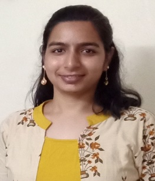
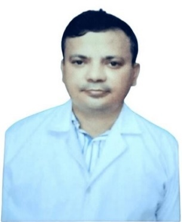

Name of the Employee
CEO
PB
'">
Dr. Preetha Bhadra
CEO
Research Areas: Animal Biotechnology, Cancer Biology, Stem Cell Biology, Neutraceuticals
Google Scholar
Coordinator
PK
'">
Dr. Pratyush Kumar Das
Coordinator
Research Areas: Environmental remediation, Nanotechnology, Cancer therapy, Polymer chemistry, Plant stress physiology
Google Scholar
Co-Coordinator, PKD campus
BK
'">
Dr. Bhadram Kalyan Chekreverthy
Co-Coordinator, PKD campus
Research Areas: Food and Pharmaceutical analysis
Google Scholar
Co-Coordinator, VZM campus
PS
'">
Dr. Poulami Sil
Co-Coordinator, VZM campus
Research Areas: Biotic and Abiotic stress, Molecular Biology, Phytohormones, Neutraceuticals
Google Scholar
Faculty Member
SN
'">
Dr. S.P. Nanda
Faculty Member
Research Areas: Inorganic Chemistry, Heterocyclic compounds
Google Scholar
Faculty Member
RJ
'">
Dr. Rajashree Jena
Faculty Member
Research Areas: Biofidobacteria, Probiotics, Anaerobes, Dairy Technology
Google Scholar
Faculty Member

RP
'">
Dr. Ruby Pandey
Faculty Member
Research Areas: Food Engineering, Microwave assisted extraction, Numerical modelling in food systems
Google Scholar
Faculty Member
AR
'">
Mr. Ankur Ramola
Faculty Member
Research Areas: Dairy Science, Quality assessment of fortified products
Google Scholar
Faculty Member
VP
'">
Mr. Victor Pradhan
Faculty Member
Research Areas: Bioinformatics, Systems Biology, Cancer Research, Nutraceuticals, Molecular Biology
Google Scholar
Faculty Member

AP
'">
Mr. Anshuman Panda
Faculty Member
Research Areas: Regulatory Affairs
Google Scholar
About
The Phytopharma Research Centre is dedicated to advancing interdisciplinary research in phytopharmaceuticals, biotechnology, and translational healthcare sciences. The Centre focuses on the extraction and characterization of plant bioactive compounds with therapeutic and anticancer potential using advanced analytical instrumentation including GC-MS/MS, LC-MS/MS, ICP-MS, HPLC, and FTIR. Research activities encompass nanoparticle synthesis, animal cell culture studies, cell viability and fluorescence-based assays, molecular biology, dairy microbiology, nutraceuticals, regulatory affairs, and dairy technology. The Centre also emphasizes cancer metabolism, systems biology, and computational simulation approaches to develop innovative, sustainable, and scientifically validated healthcare solutions for societal and industrial applications.
Vision
To be a globally recognized center of excellence in Phytopharmaceutical and Biomedical Research, advancing innovation in natural therapeutics, analytical sciences, molecular biology, computational systems biology, and translational healthcare to develop sustainable, scientifically validated, and impactful solutions for human health and well-being.